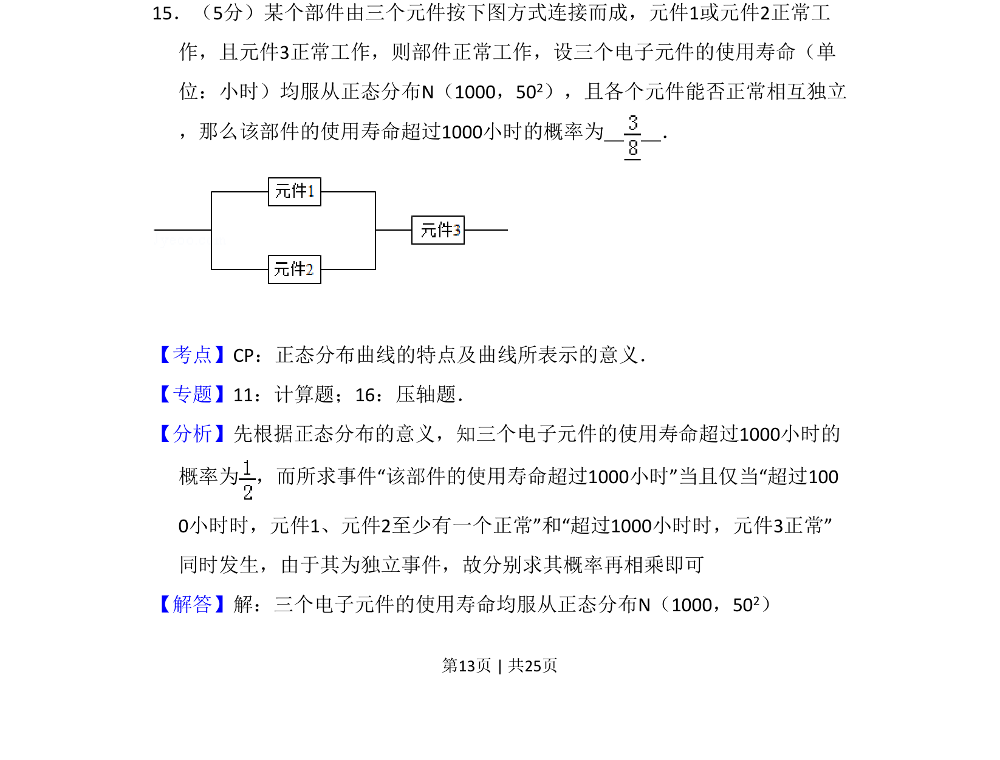
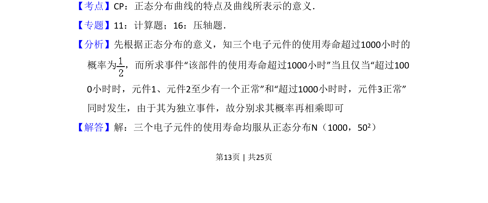
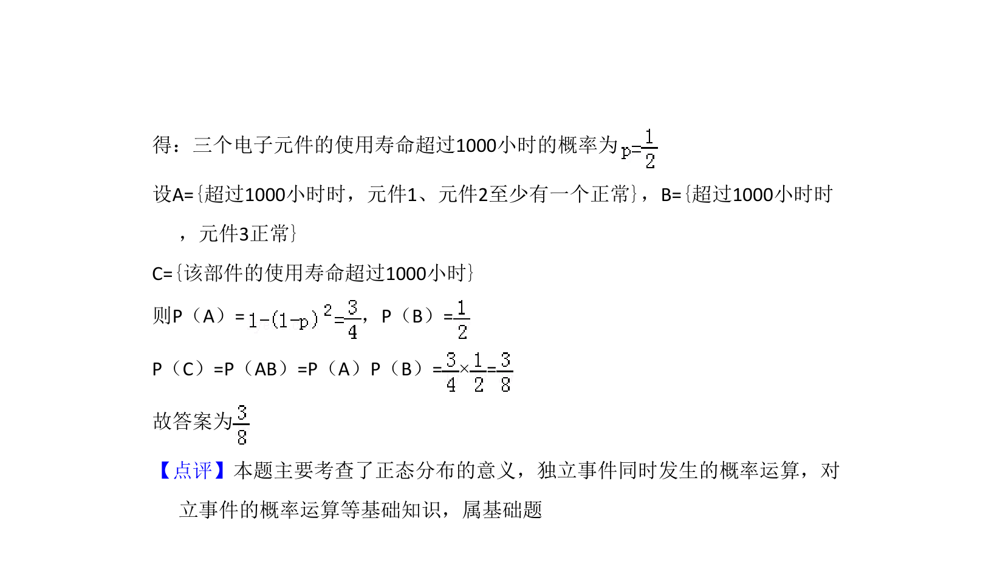

考点：正态分布 相互独立事件 概率乘法公式 并联系统可靠性

求部件正常工作概率，涉及正态分布对称性、元件正常工作的概率及独立事件同时发生的计算


📄 原 PDF 第 13 页：
素材/真题/吉林/2008-2024·（吉林）数学高考真题/2012年高考数学试卷（理）（新课标）（解析卷）.pdf
15．（5分）某个部件由三个元件按下图方式连接而成，元件1或元件2正常工 作，且元件3正常工作，则部件正常工作，设三个电子元件的使用寿命（单 位：小时）均服从正态分布N（1000，502），且各个元件能否正常相互独立 ，那么该部件的使用寿命超过1000小时的概率为 ．
【考点】CP：正态分布曲线的特点及曲线所表示的意义．菁优网版权所有 【专题】11：计算题；16：压轴题． 【分析】先根据正态分布的意义，知三个电子元件的使用寿命超过1000小时的 概率为 ，而所求事件“该部件的使用寿命超过1000小时”当且仅当“超过100 0小时时，元件1、元件2至少有一个正常”和“超过1000小时时，元件3正常” 同时发生，由于其为独立事件，故分别求其概率再相乘即可 【解答】解：三个电子元件的使用寿命均服从正态分布N（1000，502）